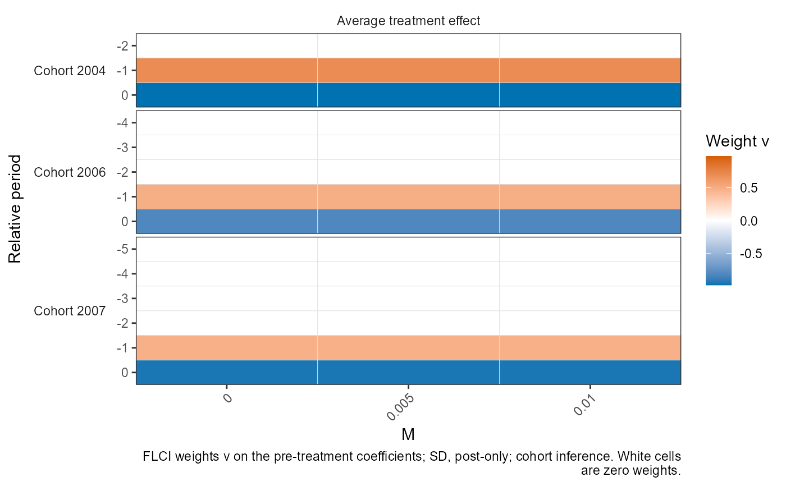
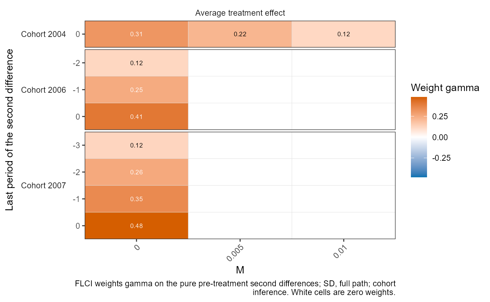

Tabulate the linear weights of fixed-length confidence intervals (FLCIs):
the weights v on the pre-treatment coefficients or the weights
gamma on the pure pre-treatment second differences, for every target
and bound of an FLCI result. plot(x, type = "weights") draws them.
Arguments
- x
A
cohort_sensitivityobject computed withmethod = "FLCI".- weights
"coefficients"(default) for the weightsvon the pre-treatment coefficients, or"gamma"for the weights on the pure pre-treatment second differences.- by
"element"(default) for one row per coefficient or second difference, or"cohort"for sums over each cohort's rows (cohort inference only).
Value
A data frame. With by = "element": one row per target, bound
and element, with columns target and label (the target's id
and label), M, cohort (NA under aggregate inference),
relative_period (the coefficient's period, or the last period of
the second difference), element (the coefficient name, or
d2_g<cohort>_s<period> for a second difference), weight,
estimate (the coefficient estimate, or the estimated second
difference), contribution (weight times estimate), and
tie.break (TRUE when the FLCI chose its weights by the
minimum-norm rule described below). With by = "cohort": one row per
target, bound and cohort, with elements (the number of rows
summed), weight (their sum), l1 (the sum of absolute
weights), share (the cohort's part of the total l1),
contribution (the sum of contributions), and tie.break. Rows
follow the targets, then the sorted bounds, then cohorts and periods in
increasing order. Attributes: weights, by, framework,
full.path; centers, one row per target and bound with the
conventional estimate, the post-only center
post.only.center, and the FLCI center; and missing,
the targets and bounds whose FLCI failed and that therefore have no
weights, with their status.
Details
The FLCI is a linear estimator: its weights on the post-treatment
coefficients are the target weights, and its weights on the pre-treatment
coefficients are v. Under the post-only SD restriction, v is
fixed at the post-only weights, which subtract each cohort's linear
extrapolation from its last two pre-treatment periods (with CS-NYT, they
also undo the base-period correction of the adjustment cohorts); the
resulting estimate is the post-only center. Under the full-path
restriction, v equals the post-only weights plus
t(D) %*% gamma, where the rows of D form the pure
pre-treatment second differences zhat = D %*% betahat, and the
FLCI center is the post-only center plus sum(gamma * zhat). Hence
the contributions of the gamma rows add up to the FLCI center
minus the post-only center, and those of the v rows to the FLCI
center minus the conventional estimate. The post-only FLCI has
gamma = 0.
Each cohort's pre-treatment coefficients satisfy one normalization (CS:
the coefficient at period 0 is zero; imputation: they sum to zero), so
weights that differ along it give the same estimate.
flci_weights() reports v in the form above, the paper's;
results[[k]]$weights$coefficients stores its projection orthogonal
to the normalization. The cohort sums of the contributions are the same
for both.
Under aggregate inference the rows are the aggregated coefficients and
their second differences. With balanced = TRUE and
cohort.paths = "window", the gamma rows are the second
differences inside the balanced window. When several weight vectors give
the same FLCI length, as can happen at M = 0, the FLCI uses the one
with the smallest Euclidean norm of gamma; tie.break marks
these rows.
Examples
data(minimum_wage)
# \donttest{
fit <- cohort_fit(Y ~ D, minimum_wage, index = c("id", "year"))
full <- cohort_sensitivity(fit, M = c(0, 0.005, 0.01), method = "FLCI",
seed = 1)
post <- cohort_sensitivity(fit, M = c(0, 0.005, 0.01), method = "FLCI",
full.path = FALSE, seed = 1)
head(flci_weights(full))
#> target label M cohort relative_period element
#> 1 att Average treatment effect 0 4 -2 delta_pre_g4_s-2
#> 2 att Average treatment effect 0 4 -1 delta_pre_g4_s-1
#> 3 att Average treatment effect 0 4 0 delta_pre_g4_s0
#> 4 att Average treatment effect 0 6 -4 delta_pre_g6_s-4
#> 5 att Average treatment effect 0 6 -3 delta_pre_g6_s-3
#> 6 att Average treatment effect 0 6 -2 delta_pre_g6_s-2
#> weight estimate contribution tie.break
#> 1 0.31191871 -0.019067503 -5.947511e-03 FALSE
#> 2 0.07546328 0.004858126 3.666101e-04 FALSE
#> 3 -0.66710227 0.014209377 -9.479107e-03 FALSE
#> 4 0.11920927 -0.012605613 -1.502706e-03 FALSE
#> 5 0.01119890 -0.038937371 -4.360558e-04 FALSE
#> 6 0.02502148 0.003400663 8.508961e-05 FALSE
flci_weights(full, weights = "gamma", by = "cohort")
#> target label M cohort elements weight l1
#> 1 att Average treatment effect 0.000 4 1 0.3119187 0.3119187
#> 2 att Average treatment effect 0.000 6 3 0.7738738 0.7738738
#> 3 att Average treatment effect 0.000 7 4 1.2087195 1.2087195
#> 4 att Average treatment effect 0.005 4 1 0.2179056 0.2179056
#> 5 att Average treatment effect 0.005 6 3 0.0000000 0.0000000
#> 6 att Average treatment effect 0.005 7 4 0.0000000 0.0000000
#> 7 att Average treatment effect 0.010 4 1 0.1150821 0.1150821
#> 8 att Average treatment effect 0.010 6 3 0.0000000 0.0000000
#> 9 att Average treatment effect 0.010 7 4 0.0000000 0.0000000
#> share contribution tie.break
#> 1 0.1359412 -0.004546022 FALSE
#> 2 0.3372716 0.003097733 FALSE
#> 3 0.5267872 -0.019651769 FALSE
#> 4 1.0000000 -0.003175838 FALSE
#> 5 0.0000000 0.000000000 FALSE
#> 6 0.0000000 0.000000000 FALSE
#> 7 1.0000000 -0.001677251 FALSE
#> 8 0.0000000 0.000000000 FALSE
#> 9 0.0000000 0.000000000 FALSE
plot(post, type = "weights")

plot(full, type = "weights", weights = "gamma", labels = TRUE)

# }